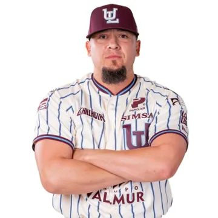
#37Aldo Montes
Lanzador derecho · México
Abridor: marca de 1-4, 7.54 de efectividad y 40 ponches en 12 aperturas.

El roster completo de Algodoneros de Unión Laguna: 36 jugadores. Las cifras son de la temporada regular 2026.

#37Lanzador derecho · México
Abridor: marca de 1-4, 7.54 de efectividad y 40 ponches en 12 aperturas.
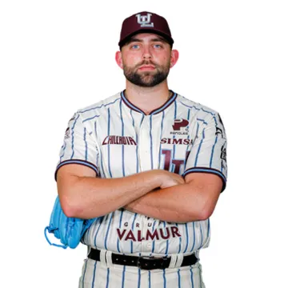
Lanzador derecho · Estados Unidos
Relevista: 37 juegos, 3.82 de efectividad y 29 ponches.
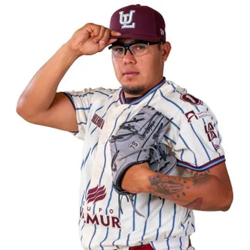
#90Lanzador derecho · México
Relevista: 5 juegos, 8.53 de efectividad y 3 ponches.
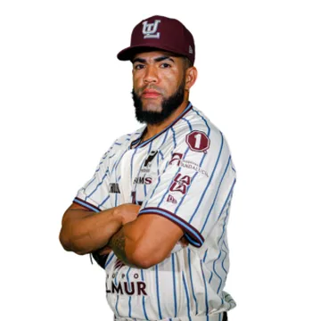
#38Lanzador derecho · Panamá
Abridor: marca de 0-2, 9.33 de efectividad y 9 ponches en 5 aperturas.
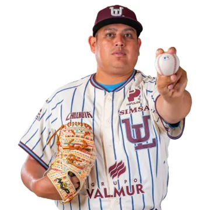
#32Lanzador zurdo · México
Relevista: 12 juegos, 6.23 de efectividad y 4 ponches.
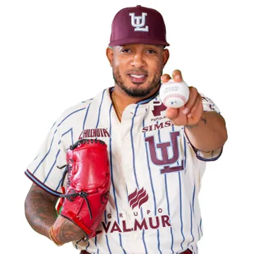
#60Lanzador zurdo · República Dominicana
Relevista: 13 juegos, 5.40 de efectividad y 6 ponches.
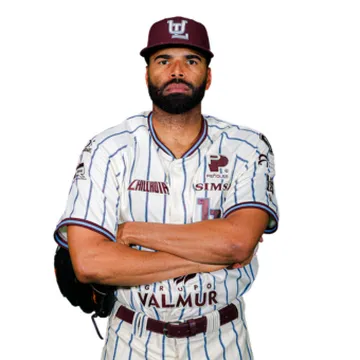
#8Lanzador derecho · República Dominicana
Abrió 5 de sus 24 juegos: marca de 2-3 y 5.93 de efectividad.
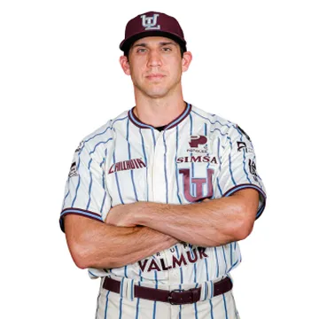
#67Lanzador derecho · Estados Unidos
Relevista: 47 juegos, 1.94 de efectividad y 45 ponches.
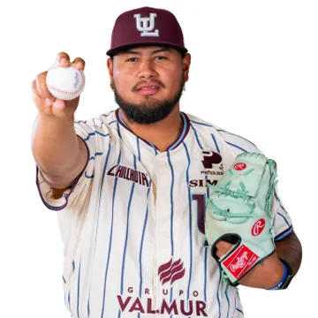
#51Lanzador derecho · Panamá
Abridor: marca de 3-6, 6.23 de efectividad y 38 ponches en 16 aperturas.
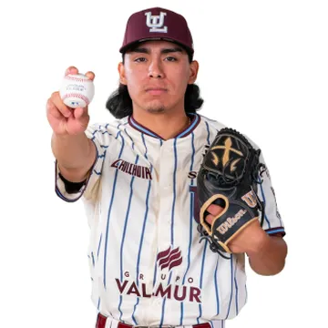
#30Lanzador derecho · México
Relevista: 13 juegos, 3.50 de efectividad y 11 ponches.
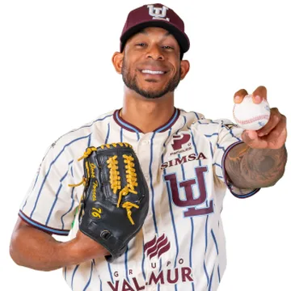
#76Lanzador zurdo · Venezuela
Relevista: 22 juegos, 6.23 de efectividad y 22 ponches.
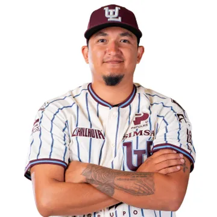
#98Lanzador derecho · México
Abrió 5 de sus 38 juegos: marca de 2-4 y 5.79 de efectividad.
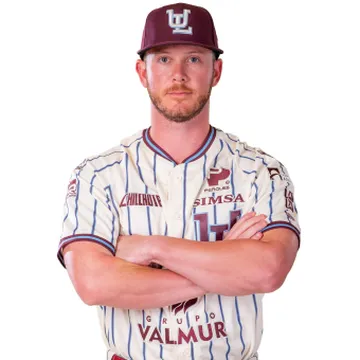
#80Lanzador derecho · Estados Unidos
Cerrador del equipo: 18 salvamentos y 2.74 de efectividad.
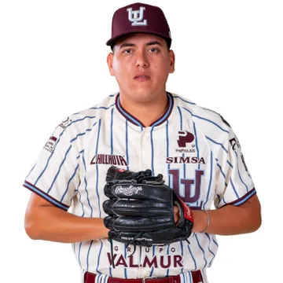
Lanzador derecho · México
Lanzó en 4 juegos (2 2/3 entradas).
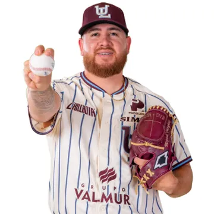
#56Lanzador derecho · México
Relevista: 36 juegos, 5.30 de efectividad y 24 ponches.
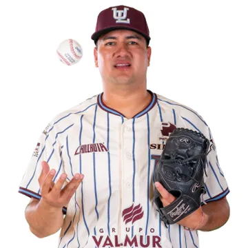
#46Lanzador derecho · México
Relevista: 31 juegos, 6.23 de efectividad y 35 ponches.
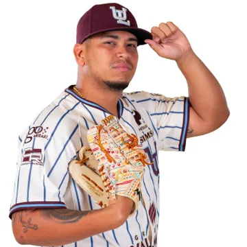
#57Lanzador zurdo · Venezuela
Abridor: marca de 3-4, 6.30 de efectividad y 52 ponches en 12 aperturas.
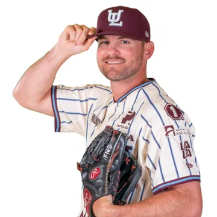
#95Lanzador derecho · Estados Unidos
Relevista: 44 juegos, 1.97 de efectividad y 51 ponches.
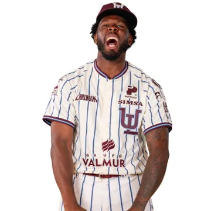
#88Lanzador derecho · Estados Unidos
Abridor: marca de 5-4, 6.16 de efectividad y 65 ponches en 18 aperturas.
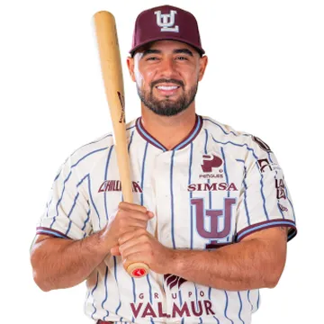
#5Receptor · México
Bateó .229 con 4 jonrones y 26 producidas en 60 juegos.
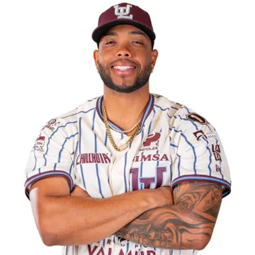
#12Receptor · Curazao
Bateó .236 con 4 producidas en 31 juegos.
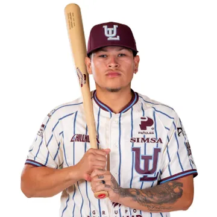
#70Receptor · México
Jugó 5 juegos.
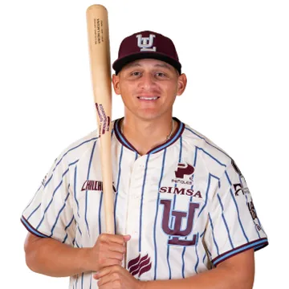
#99Primera base · Estados Unidos
Bateó .241 con 3 jonrones en 28 juegos.
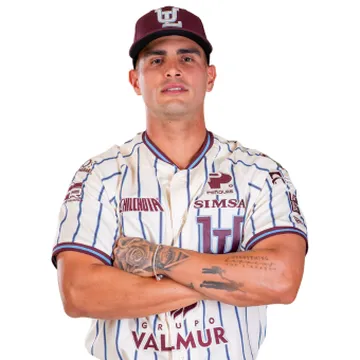
#62Cuadro interior · Cuba
El mejor promedio del equipo (.344), con 11 jonrones y 55 producidas.
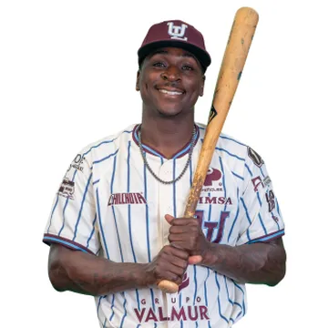
#18Shortstop · Países Bajos
Fue el shortstop titular de los Yankees de 2015 a 2019.
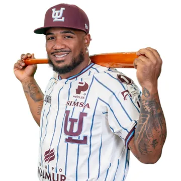
#13Tercera base · República Dominicana
Bateó .273 con 12 jonrones y 40 producidas en 59 juegos.
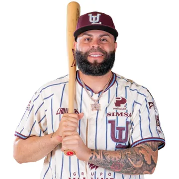
#26Tercera base · Puerto Rico
Bateó .263 con 6 jonrones y 31 producidas en 63 juegos.
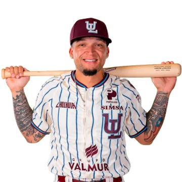
#1Segunda base · Puerto Rico
Bateó .300 con 11 jonrones y 49 producidas en 87 juegos.
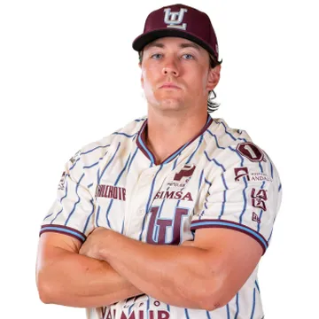
#31Primera base · Estados Unidos
Líder del equipo en jonrones (18) y carreras producidas (68).
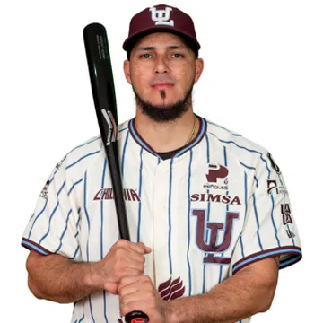
#27Jardín central · Venezuela
Bateó .230 con 3 jonrones y 14 producidas en 39 juegos.
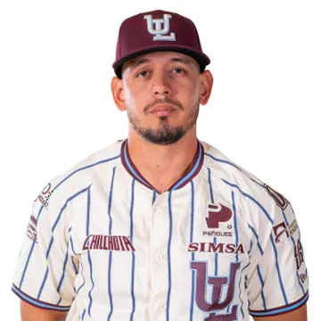
#66Jardinero · México
Bateó .282 con 13 producidas en 57 juegos.
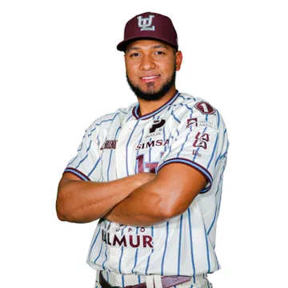
#53Jardín derecho · Venezuela
Con pasado en Grandes Ligas con Padres, Royals y Pirates. Bateó .315.
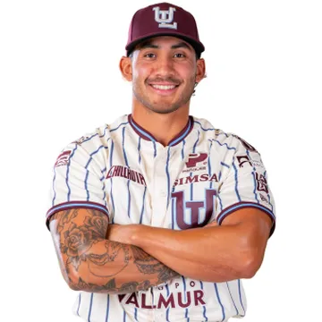
#3Jardín central · Estados Unidos
Bateó .247 con 8 jonrones y 30 producidas en 84 juegos.
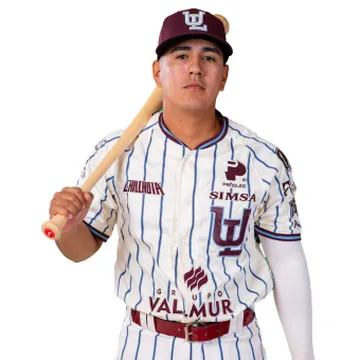
#2Jardinero · México
Jugó 7 juegos.
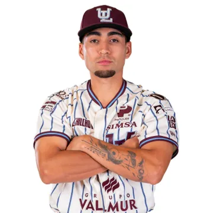
#54Jardinero · México
Bateó .280 con 1 jonrón y 3 producidas en 39 juegos.
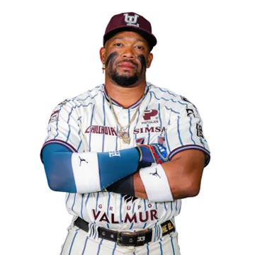
#33Jardinero · Cuba
Bateó .342 con 5 jonrones y 35 producidas en 54 juegos.
Estadísticas oficiales de la Liga Mexicana de Beisbol, temporada regular 2026.